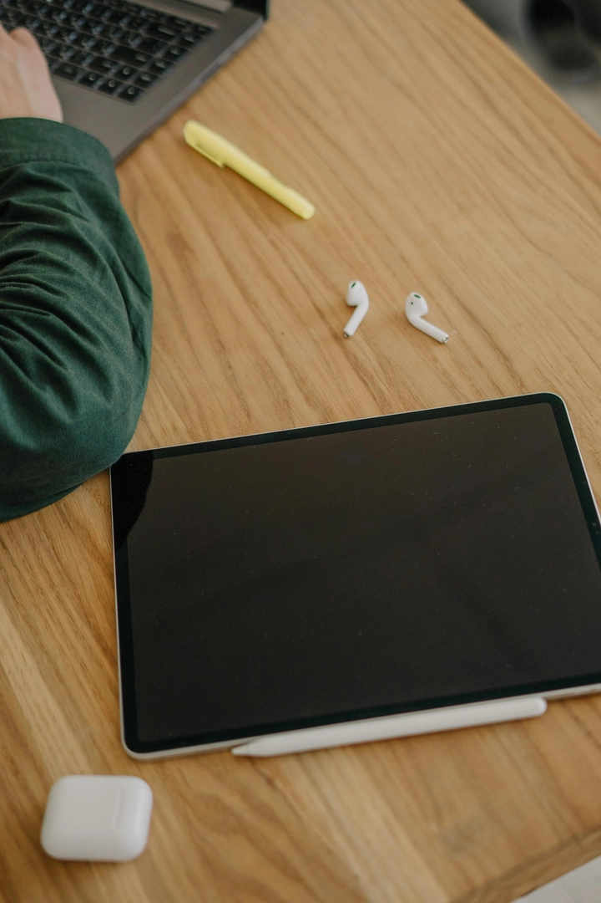
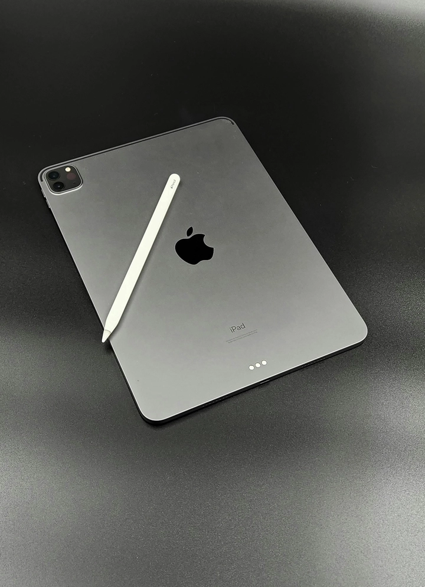

Đánh Giá iPad Pro M5: Hiệu Năng Vượt Trội Và Thiết Kế Sành Điệu
iPad Pro M5 tiếp tục khẳng định vị thế dẫn đầu của Apple trong lĩnh vực máy tính bảng, nơi mà sự đổi mới không ngừng được đẩy mạnh. Đây không chỉ là một phiên bản nâng cấp đơn thuần so với người tiền nhiệm iPad Pro M4, mà còn là một bước tiến đột phá về hiệu năng, thiết kế và khả năng xử lý trí tuệ nhân tạo. Nhiều người dùng đang băn khoăn về sự khác biệt giữa iPad Pro M5 và M4, đặc biệt khi Apple liên tục cải tiến để đáp ứng nhu cầu đa dạng từ người dùng phổ thông đến chuyên gia.
Bài viết này TrithucWorld sẽ cùng bạn đọc khám phá về iPad Pro M5, thiết bị mới nhất từ Apple, mang đến những cải tiến đáng kể về hiệu năng, thiết kế và công nghệ trí tuệ nhân tạo. Với tư cách là một sản phẩm cao cấp, iPad Pro M5 không chỉ nâng tầm trải nghiệm người dùng mà còn đặt ra tiêu chuẩn mới cho phân khúc máy tính bảng, giúp người dùng dễ dàng quyết định xem liệu đây có phải lựa chọn đáng đầu tư hay không.
Bối cảnh ra mắt của iPad Pro M5
iPad Pro M5 được Apple giới thiệu như một biểu tượng của sự tiến bộ, đặc biệt trong bối cảnh công nghệ AI và đồ họa đang phát triển mạnh mẽ. Với sự ra mắt này, Apple không chỉ tập trung vào việc cải thiện phần cứng mà còn tích hợp các tính năng hỗ trợ cho các ứng dụng AI, giúp thiết bị trở thành công cụ mạnh mẽ cho sáng tạo và giải trí. So với iPad Pro M4, phiên bản mới này được thiết kế để xử lý tốt hơn các tác vụ nặng, từ chỉnh sửa video chuyên nghiệp đến chơi game đồ họa cao cấp. Điều này phản ánh chiến lược của Apple trong việc kết hợp giữa phần cứng và phần mềm, như hệ điều hành iPadOS mới nhất, để mang lại trải nghiệm liền mạch và tối ưu.
Hơn nữa, iPad Pro M5 ra đời trong thời điểm mà thị trường máy tính bảng đang cạnh tranh gay gắt, với các đối thủ như Samsung và Microsoft. Apple đã tận dụng lợi thế về hệ sinh thái để làm nổi bật iPad Pro M5, chẳng hạn như tích hợp tốt hơn với các thiết bị khác như MacBook hoặc iPhone. Điều này không chỉ nâng cao giá trị sử dụng mà còn tạo ra một hệ thống làm việc liền mạch, giúp người dùng tiết kiệm thời gian và tăng năng suất. Tuy nhiên, với giá thành cao, việc cân nhắc so sánh iPad M5 M4 là rất quan trọng để tránh lãng phí nếu bạn đã sở hữu phiên bản cũ.
Câu hỏi thường gặp về iPad Pro M5
Nhiều người dùng thường hỏi liệu iPad Pro M5 có thực sự vượt trội hơn M4 hay chỉ là những nâng cấp nhỏ? Dựa trên dữ liệu từ các bài kiểm tra benchmark, iPad Pro M5 cho thấy sự cải thiện đáng kể ở nhiều khía cạnh, đặc biệt là hiệu năng AI và đồ họa. Ví dụ, nếu bạn là một nhà sáng tạo nội dung, iPad Pro M5 với GPU mạnh mẽ hơn có thể xử lý các tác vụ như render video 4K nhanh hơn gấp đôi so với M4. Ngoài ra, các tính năng mới như Wi-Fi 7 và sạc nhanh cải tiến làm cho iPad Pro M5 trở nên hấp dẫn hơn cho nhu cầu di động cao.
Một câu hỏi khác là về tính tương thích với các phụ kiện. iPad Pro M5 vẫn giữ nguyên cổng USB-C và hỗ trợ bút Apple Pencil thế hệ mới, nhưng với khả năng xuất hình ảnh 4K 120fps, nó sẵn sàng cho các màn hình cao cấp sắp ra mắt của Apple. Điều này mở ra tiềm năng cho các ứng dụng chuyên nghiệp, như chỉnh sửa ảnh hoặc thiết kế đồ họa, nơi mà độ chính xác và tốc độ là yếu tố quyết định. Tóm lại, iPad Pro M5 không chỉ là một thiết bị, mà còn là nền tảng cho tương lai của công nghệ di động, đặc biệt với sự tích hợp AI ngày càng sâu.
Lợi ích dành cho người dùng phổ thông và chuyên nghiệp
Đối với người dùng phổ thông, iPad Pro M5 mang lại trải nghiệm giải trí đỉnh cao, từ xem phim 4K đến chơi game mượt mà, nhờ vào hiệu năng vượt trội. Trong khi đó, các chuyên gia như nhiếp ảnh gia hoặc nhà làm phim sẽ đánh giá cao khả năng xử lý AI, giúp tự động hóa nhiều quy trình như chỉnh sửa hình ảnh, tạo video, hay thậm chí là phân tích dữ liệu. Các tính năng này không chỉ giúp họ tiết kiệm thời gian mà còn tăng cường khả năng sáng tạo, cho phép vận dụng tốt hơn các công cụ công nghệ tiên tiến.
Điểm nổi bật trong trải nghiệm của iPad Pro M5 còn nằm ở khả năng tương tác với hình ảnh và video. Những ứng dụng hỗ trợ hình ảnh và dựng phim sẽ hoạt động một cách mượt mà và hiệu quả, cho phép người dùng sáng tạo mà không lo về hiệu suất. Nhờ vào GPU mạnh mẽ, các tác vụ như xử lý hình ảnh phức tạp hay hiệu ứng đặc biệt sẽ được thực hiện một cách nhanh chóng, giúp giảm thiểu thời gian render.
Ngoài ra, sự cải tiến về hệ thống kết nối cũng mang lại lợi ích lớn cho cả người dùng phổ thông và chuyên nghiệp. Với Wi-Fi 7, tốc độ tải và truyền dữ liệu trở nên nhanh hơn bao giờ hết. Điều này giúp bạn có thể tải xuống các tập tin lớn hoặc stream video 4K mà không gặp phải độ trễ. Tóm lại, iPad Pro M5 không chỉ là một công cụ mà còn là một người bạn đồng hành lý tưởng cho mỗi người dùng, mang đến trải nghiệm sử dụng tối ưu và liền mạch.

Thiết kế mỏng nhẹ và tinh tế
So với M4, thiết kế của iPad Pro M5 gần như không thay đổi về ngoại hình tổng thể, vẫn giữ lớp vỏ nhôm chắc chắn, các cạnh vuông vắn và siêu mỏng. Điểm khác biệt dễ nhận thấy là logo iPad Pro đã được loại bỏ ở mặt sau, giúp thiết bị trông liền lạc, tối giản hơn. Màu bạc của máy mang lại cảm giác sang trọng, dễ phối hợp với các phụ kiện như bàn phím Magic Keyboard hay bút Apple Pencil.
Thiết kế mỏng nhẹ này không chỉ thẩm mỹ mà còn tăng tính di động, giúp người dùng dễ dàng mang theo trong các chuyến công tác, học tập hay sáng tạo nội dung. Tuy nhiên, điều này cũng đặt ra thách thức về quản lý nhiệt độ, mà Apple đã giải quyết thông qua hệ thống làm mát tinh vi, đảm bảo máy vẫn mát ngay cả khi chạy các tác vụ nặng.
Hiệu năng CPU vượt trội
iPad Pro M5 được trang bị bộ vi xử lý Apple M5, sản xuất trên tiến trình 2 nanomet tiên tiến. So với M4 3nm, M5 nhỏ hơn tới 40%, cho phép tích hợp hơn 30 tỷ transistor, tăng tốc độ xử lý mà vẫn tiết kiệm điện năng. Bộ vi xử lý này gồm các nhân hiệu năng cao kết hợp với nhân tiết kiệm điện, giúp iPad Pro M5 vừa mạnh mẽ vừa bền bỉ trong suốt ngày dài sử dụng.
Qua các bài test Geekbench 6, hiệu năng đa nhân của iPad M5 tăng khoảng 15% so với M4, trong khi hiệu năng đơn nhân tăng khoảng 11%. Đây là bước tiến lớn, giúp các ứng dụng nặng như chỉnh sửa video 8K, dựng 3D hay mô phỏng AR chạy mượt mà mà không bị giật hay lag.
GPU cải tiến với ray tracing
GPU 10 nhân của M5 cũng được nâng cấp mạnh mẽ. Apple đã tích hợp các bộ tăng tốc mới và cải tiến ray tracing, giúp hiệu ứng đồ họa mượt mà hơn, chân thực hơn, đặc biệt khi chơi game hoặc dựng phim. Bài test 3D MarkX Steel Nomad Light cho thấy hiệu năng đồ họa tăng hơn 35% so với M4, đồng thời tiết kiệm năng lượng và không quá nóng máy.
Điều này giúp các nhà sáng tạo nội dung có thể dựng video, thiết kế 3D, chỉnh sửa ảnh phức tạp mà không cần máy tính để bàn, tất cả đều có thể thực hiện trên iPad Pro M5.
Bộ nhớ RAM và SSD
iPad Pro M5 phiên bản cơ bản được trang bị 12GB RAM, tăng đáng kể so với 8GB của M4. Điều này mang lại khả năng đa nhiệm vượt trội, mở nhiều ứng dụng nặng cùng lúc mà không gặp tình trạng giật lag.
SSD của M5 cũng nhanh hơn, với tốc độ đọc lên đến 3.413 MB/s, gấp đôi so với M4, trong khi tốc độ ghi cũng đạt khoảng 2.876 MB/s. Điều này giúp việc mở tệp lớn, render video hay sao chép dữ liệu trở nên nhanh chóng và hiệu quả hơn.
Hệ thống AI thông minh
Một trong những điểm nhấn lớn nhất của iPad Pro M5 là Neural Engine mới. Bộ xử lý AI này có khả năng nhận diện, theo dõi và dự đoán các đối tượng trong thời gian thực, từ con người, động vật, xe cộ cho đến các chuyển động phức tạp. Nhờ đó, các ứng dụng như chỉnh sửa ảnh, quay video, AR hay game trở nên thông minh hơn, nhanh hơn và chính xác hơn.
Khả năng AI cải thiện hiệu suất autofocus, nhận diện đối tượng ngay cả khi bị che khuất hay chuyển động nhanh, giúp việc chụp ảnh, quay phim chuyên nghiệp trở nên dễ dàng và chất lượng hơn.
Màn hình và trải nghiệm hiển thị
iPad Pro M5 tiếp tục sử dụng màn hình Liquid Retina XDR với độ sáng cao, màu sắc chân thực và hỗ trợ ProMotion 120Hz. Điều này mang đến trải nghiệm lướt mượt mà, hiển thị chi tiết, đặc biệt khi chỉnh sửa hình ảnh hoặc dựng video. Màn hình còn hỗ trợ HDR, HLG, SLOG3, giúp các nhà quay phim có nhiều lựa chọn màu sắc, tối ưu cho hậu kỳ.
Thiết kế viền mỏng, camera TrueDepth tích hợp Face ID giúp trải nghiệm xem phim, gọi video hay làm việc trực tuyến trở nên liền mạch.
Pin và sạc nhanh
iPad Pro M5 duy trì thời lượng pin dài, đồng thời hỗ trợ sạc nhanh 40W trở lên, giúp sạc 50% chỉ trong 30 phút. Apple cũng tối ưu hóa mức tiêu thụ năng lượng, đảm bảo thiết bị hoạt động lâu mà vẫn mát mẻ, ngay cả khi chạy các tác vụ nặng như chơi game 3D hoặc dựng video 8K.
Phiên bản có kết nối 5G và Wi-Fi 7 giúp tăng tốc độ truy cập Internet, đồng bộ dữ liệu nhanh và kết nối ổn định hơn, tối ưu cho làm việc từ xa và streaming.
Khả năng chơi game và giải trí
Với GPU mới và hỗ trợ ray tracing, iPad Pro M5 cho trải nghiệm chơi game xuất sắc. Bài test Solar Bay Extreme Unlimited Mode cho thấy FPS tăng từ 18,4 lên 28, tức tăng khoảng 53%. Điều này mang lại trải nghiệm chơi game mượt mà, đồ họa sống động ngay trên iPad mà không cần PC.
Khả năng xử lý AI còn giúp tối ưu hiệu ứng trong game, theo dõi đối tượng, tăng chất lượng hình ảnh và giảm giật lag. Đây là lựa chọn lý tưởng cho các game thủ và nhà sáng tạo nội dung tương tác.
Cổng USB-C và khả năng tương thích đa dạng
Một trong những nâng cấp quan trọng của iPad Pro M5 là cổng USB-C thế hệ mới, mang lại khả năng kết nối linh hoạt và tốc độ truyền dữ liệu nhanh hơn so với các phiên bản trước. USB-C trên iPad Pro M5 không chỉ hỗ trợ sạc nhanh mà còn tương thích với nhiều thiết bị ngoại vi như ổ cứng ngoài, màn hình phụ, máy ảnh và các phụ kiện hỗ trợ Thunderbolt 4.
Với khả năng xuất hình ảnh và video ra màn hình 4K hoặc 5K, người dùng có thể biến iPad Pro M5 thành một trạm làm việc di động chuyên nghiệp, phục vụ cho việc chỉnh sửa video, thiết kế đồ họa hay thuyết trình. Ngoài ra, khả năng kết nối USB-C còn giúp iPad Pro M5 tương thích với bàn phím, chuột, trackpad, tạo trải nghiệm gần giống như trên máy tính xách tay.
Điều này đặc biệt hữu ích cho các nhà sáng tạo nội dung, nhiếp ảnh gia và designer, những người cần chuyển dữ liệu lớn nhanh chóng, kết nối nhiều thiết bị cùng lúc và muốn tối ưu hóa quy trình làm việc mà không cần mang theo MacBook. Khả năng tương thích đa dạng của USB-C cũng đồng nghĩa với việc người dùng iPad Pro M5 có thể sử dụng các phụ kiện đa nền tảng, từ Windows đến macOS, mà không gặp hạn chế về giao thức kết nối.
Ngoài ra, USB-C trên iPad Pro M5 hỗ trợ sạc ngược cho các thiết bị khác, cho phép bạn sạc tai nghe, iPhone hoặc các phụ kiện nhỏ trực tiếp từ iPad. Tính năng này giúp iPad Pro M5 trở thành trung tâm kết nối di động tiện lợi, giảm sự phụ thuộc vào nhiều bộ sạc khác nhau và nâng cao hiệu quả sử dụng trong mọi tình huống, từ văn phòng đến di chuyển ngoài trời.
Nhìn chung, cổng USB-C thế hệ mới trên iPad Pro M5 không chỉ đơn thuần là một cổng kết nối, mà còn là một công cụ tối ưu hóa công việc và trải nghiệm sáng tạo, đáp ứng nhu cầu đa dạng của người dùng chuyên nghiệp và cá nhân. Đây là một trong những lý do chính khiến iPad Pro M5 trở thành thiết bị đáng đầu tư cho cả học tập, làm việc lẫn giải trí trong năm 2025.
Kết nối Bluetooth mới
Kết nối là một yếu tố không thể thiếu trong đời sống kỹ thuật số hiện đại, và iPad Pro M5 đã hoàn thiện ở khía cạnh này nhờ tích hợp Wi-Fi 7. Với khả năng hỗ trợ tốc độ cao và đa băng tần, người dùng có thể kết nối đồng thời với nhiều thiết bị và tận dụng băng thông một cách tối đa. Điều này đặc biệt hữu ích trong các tình huống cần tải xuống dữ liệu lớn, như video 4K hoặc game nặng, mà không bị gián đoạn.
Tính năng Wi-Fi 7 không chỉ mang lại trải nghiệm kết nối tốt hơn mà còn giúp tiết kiệm pin cho thiết bị. Nhờ vào việc sử dụng năng lượng hiệu quả, iPad Pro M5 có thể duy trì thời gian sử dụng lâu hơn khi hoạt động trong môi trường mạng không dây mạnh mẽ. Điều này đồng nghĩa với việc người dùng có thể thoải mái stream video hoặc tham gia cuộc họp trực tuyến mà không lo lắng về việc hết pin giữa chừng.

Cổng USB-C trên iPad Pro M5 cũng được cải tiến hơn nữa với khả năng xuất hình ảnh 4K 120fps, mở ra nhiều cơ hội cho những người sáng tạo nội dung. Với cổng này, người dùng có thể dễ dàng kết nối với các màn hình trình chiếu chuyên nghiệp hoặc thiết bị ngoại vi khác, giúp tăng cường trải nghiệm làm việc và giải trí. Tính tương thích với các thiết bị Bluetooth mới nhất cũng là một trong những điểm cộng lớn cho iPad Pro M5, giúp người dùng dễ dàng kết nối với tai nghe không dây hoặc bộ điều khiển game.
Kết luận là, sự cải tiến trong kết nối không chỉ nâng cao hiệu suất mà còn góp phần mang lại trải nghiệm sử dụng tổng thể tốt hơn cho người dùng, từ các nhà sáng tạo nội dung đến người chơi game.
Tóm lại
iPad Pro M5 không chỉ là một nâng cấp về phần cứng, mà còn là một bước tiến toàn diện về thiết kế, hiệu năng CPU, GPU, RAM, khả năng xử lý AI, kết nối và trải nghiệm sử dụng. Apple tiếp tục khẳng định vị thế tiên phong trong ngành máy tính bảng, cung cấp sản phẩm phù hợp cho cả nhà sáng tạo chuyên nghiệp lẫn người dùng phổ thông. Đây là một chiếc tablet hoàn hảo cho nhiếp ảnh gia, nhà làm phim, game thủ và người sáng tạo nội dung nói chung. Với tất cả những nâng cấp này, iPad Pro M5 hứa hẹn sẽ duy trì vị thế là chiếc tablet mạnh mẽ nhất hiện nay, đáng để cân nhắc cho những ai muốn trải nghiệm công nghệ mới nhất của Apple.